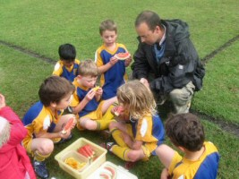
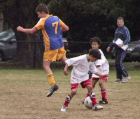

| Match Report - 22 May 2010 |
|
|
|
|
|
|
|
|
|
|
It was a wet but glorious victory, 15-1 for the White A's!
Ollie did a fantastic job running with the ball and did some great big kicks in
order to win the Man of the Match!

Ben was fantastic in defence and stopped many goals from being scored and Ryan
scored a fantastic goal which he dribbled halfway down the field and scored with
great excitement. Max, Toby and Ashton were on a goal scoring fest and used what
they had practised at training to dribble and pass beautifully. Well done in
harsh conditions!

- Louise Gleeson
|
|
|
|
|
|
A wet & miserable Saturday morning did not provide ideal conditions for
scintillating game play by the White B's this week. However, it did not dampen
the enthusiasm shown by the team on the field, as they piled on the pressure to
their more experienced opponents.
Christian again scored an early goal which brought his season tally to 3, and set
the scene for a close contest. Alexis attacked the ball well, and was unlucky not
to score.
Blake made a few good runs with the ball, with one particular drive through the
middle of the defence a standout. Riley continued to get into the thick of it by
chasing anything that moved, while Joshua was never far away from the action.
Idan had his best game of the season, putting in an extra effort to win the
contest for the ball and was rewarded with his first goal and the Player of
the Week award.
Again, a big improvement by all players was evident which only bodes well for
coming matches.
- Will
|
|
|
| U7 Green |
|
North Ryde 3 - Macquarie Dragons 4
|
|
|
|
WOW, what a great game of soccer!

Fontenoy Field #3 was wet and slippery after the night's rain and the turf was wet
underfoot. Everybody at North Ryde played well and had to lift their game to match
the skills of their mighty Dragon opponents.
Within seconds of starting, the Dragons came at us hard and kicked an early goal.
1-0 Dragons. North Ryde quickly replied and off the boot of Finn, it was even, 1-1.
For the rest of the first half, everybody marked well, spread the ball wide and
played as a team. Hamish had some good clearances from the back, whilst Finn worked
tirelessly on the attack with a number of near goal attempts just missing the
posts.
At half time, coach for the day, Darren re-iterated that the day was all about
'teamwork' and shortly thereafter, everybody was back on the pitch for the second
half, rested and rearing to go.
The second half was again very tough with everybody trying hard. Anniruddh made
some good tackles in midfield and Will & Tom were solid in their defence of the
superb Dragons attack, often putting their bodies on the line (sometimes I mean
literally on the ground) in order to make the tackle.
With about 5 minutes to go, the Dragons slotted their second goal for the game,
another from long range. 2-1 Dragons. Evan, man of the match, quickly replied with
a goal for North Ryde. The score was now even at 2-2. Almost immediately, from a
goal kick, the Dragons kicked the ball to their star player who raced away down
their left-hand side to score, single handed. 3-2 Dragons. Just when everybody
thought the final whistle was about to be blown, the Dragons scored again, another
long range shot! 4-2 Dragons.
North Ryde used great spirit to move forward onto attack and put intense pressure
on the Dragons defence. Following a scrum and a scuffle in the Dragons goal mouth,
the Dragons kicked an own-goal just as the final whistle blew.
What a great game!
- Andrew Bain
|
|
|
|
|
|
What a great game. Each week seems to be improvements all round with out Mighty
Bees. Holy Cross had a couple of players home sick with this cold weather and
therefore had no reserves this week. A few members of our team were battling off
a cough and cold and we hope that they feel better soon. John Eadie (our coach
this week) started the pre-game warm up with some shots on goal and everone was
excited to take the field.
In the first 20 mintutes the ball was sailing from one end of the field to the other
like a game of ping pong. There was nothing between these 2 great teams. The fact
that a lot of both teams were friends through school and living locally made for
a fun, competitive and supportive game of soccer. With such a fast paced game,
both sides were feeling tired and just before half time, HCC broke through an
outstanding North Ryde defence to score.
The midfield was very strong this week. Special mention goes to Rishi - his defence
and attack was outstanding. When everyone was tired he kept soldiering on and made
some amazing slide tackles that surely saved a number of shots on goal, a true
display of skill for the full game.
Cameron was reading the play well in the sweeper position and was kicking those
balls left and right to his team mates - well done. Luca and Liam were also great
in the midfield and attacking well. Emily and Kevin made some great runs down the
field showing their ball skills through the HCC defence. The big moment came for
Oliver this week, his first goal of the season dribbling a fine goal over the line
and what axcitement it brought as the sideline erupted to the equalizer 10 minutes
into the second half.
From that moment both teams continued to play their best until the final whistle
blew. The result a 1-1 draw. Thanks John for coaching the team and refereeing, we
all appreciate it.
Our player of the match this week: Mr Oliver Robson
- Sarah Robson
|
|
|
|
|
|
What a team, What a tough game, What a show of persistence!
The boys... Luke A, Jarrod, Jay, Nathaniel, Kaiden, Aden and Blake worked really
hard at this week's game, showing an excellent demonstration of team thinking
skills and great ball skills leading them to a few close calls. Luke M would
love to have seen the tricky ball skills.
Hungry for a goal, just before end of the first half the boys worked well managing
to get the ball across to Aden who positioned himself well to put one between the
posts... Yahooooo, well deserved!
Keep it up boys, the crowd loves it. We proud parents enjoy ourselves as much as
you do.
Great win, the score was 1 - 0.
Man of the match went to Blake who could not be any prouder, whose determination
outruled any sense of battling a cold - well deserved.
- Caterina (Luke M's Mum)
|
|
|
|
|
|

We were at home this week to yet another strong team in the competition. The weather
was damp but the mood was good after last week holding the competition leaders to a
narrow 1-0 loss. In the first half the team was made up of 3 under 10 div 5 boys as
we were short on numbers this week. A special thanks to Thomas, Ben and Pranav for
playing the first half as they had yet to play in their own game.
We have now played the top two teams in the last 2 weeks and only conceded 3 goals
which is a very good effort considering how many goals that both of these teams have
scored so far. It has been a really good defensive effort from all the team and we
are starting to value our goals and defend with great urgency. It was 0-0 at half
time and this was due to all the boys playing some great soccer from the backs and
through the midfield. Our forwards had a few chances to score and it was a very even
first half.
In the second half we had no substitutes, which may have made the difference as our
boys seemed to be run off their feet. We still had a few more chances to score but
the end result was a 2 - nil loss.
It is now half way in the season and it is round 2 from this weekend. A chance now
to beat those teams that beat us in the first round. We have proven that our team
can match it with those teams on top of the ladder so lets all look forward to the
second half of the season and try and push for the final 4 teams. With our shoe
laces tied up tight and the thought of making the top 4 I am sure we will see some
more great football from our under 10/4s.
- Stuart Sharpe
|
|
|
|
|
|
This week the boys were up against the Gladesville Ravens. There had been a lot of
overnight rain and some drizzle in the morning. However, it looked like it was
going to turn into a nice day. The boys started to roll up. It looked like our
boys had a challenge on their hands. But there was 30 minutes before kick off.
The coach had the boys doing some warm-up drills before the kickoff. With the
opposition coach warming up the well-oiled Raven machine there was no fear present
on the boys faces as the coach was encouraging the boys to have fun and enjoy
themselves.
The Ravens won the toss and chose to kick off. Our boys started strong and kept the
ball away from our goals early with some close attempts on their goals by Massie
and Adam and a nice run from Ethan. Ben was goalie for the first half and managed
to save a few with some strong clearing kicks from Josh, Salim and Ahmed, with great
midfield play by Timothy, Makoto and Pranav. The coach interchanged Thomas, Julian
and Sebastiano through the first half. It was great to see them burst forward and
the defensive play by all the boys. To see the boys take in the training and put it
on the field on game day was fantastic. The boys had an exceptional half with no
goals by either side.
With encouragement from the coach at half time the boys took off from where they
left off from the first half. Without some great defensive play the Raven's could
have been in front by 3 goals. However our boys weren't giving up. It was the first
game that Julian (Birthday boy) has played as striker. With the key element that
the boys had practiced at training fresh in his mind - when in the penalty area
take a shot - and with 15 seconds left on the clock the ball left Julian's boot
and went high in the left hand corner of the net. As the ball hit the back of the
net the ref called the full time whistle. The jubilation on the boys faces as they
won their first game was fantastic.
The U10/5's played very well and deserved the win. I will be looking forward to
next week's game. I dare say the picture explains it all!
- Shaune Houssenloge (Manager)
|
|
|
|
|
|
North Ryde's finest assembled this week at the 1st class facilities of North Ryde
Oval, on a cool blustery Saturday afternoon. Our heroes were pumped for a good
performance today, coming off a lacklustre performance the previous week which
ended in a loss and had one of their players up in front of the judiciary because
he chose to carry a handbag. This week's assignment had them up against Holy Cross,
a foe our heroes have clashed with many a time over the years, with some of their
grand final clashes still being whispered about throughout hushed changerooms
across this vast continent. Our heroes had trouble looking in the eyes of their
comrades, so deep was the shame from their feminine performance the previous week,
and the boys nervously anticipated the fire and brimstone sermon that Crusher was
undoubtedly about to unleash upon them.
Brother Mick sauntered over to the tense men, climbed atop of his inflatable pulpit,
and with hands clenched on the good book, he gazed down upon these blue and gold
warriors gathered in front of him... the men fell silent... the capacity crowd
hushed... time, stood still... Crush inhaled a deep breath and stared into the souls
of his crusaders... The silence was deafening... For 5 whole minutes North Ryde's
finest stood in that roaring silence, they had unconsciously huddled together
shoulder to shoulder, their breathing had synchronized, their hearts beating as one
as it crashed throughout their ears. The referee blew a long piercing whistle
signalling the start of the game, and still our heroes stood silently fast... and as
the pea stopped vibrating around inside its metal prison, Crush raised his stubbled
chin and muttered... "Enough said". A blood curdling roar shattered the silence as
our heroes couldn't contain their emotions any longer, they bolted at the field and
hurdled the fence into the fray, like their forefathers in Turkey all those years
ago...
The game started at a ferocious pace, with North Ryde's finest dominating play with
so many shots ringing off the crossbar it sounded like a Sunday in the city of
churches... Proving themselves to be a gallant opposition, Holy Cross struck back,
and counterpunched our heroes, going toe to toe for the next 15 minutes without
either side being able to trouble the scorers. The rest of the first half proved to
be a war of attrition, with both sides throwing fresh troops into the melee trying
without success to gain the upper hand. Both teams wearily jogged to the sheds at
half time, bloodied and bruised, nil - all was a good reflection of that half and
it was evident to all that the victory in this clash will be awarded to the team
that purely wants it more.
Our heroes took their positions for the commencement of the second half, the stiff
southerly breeze was now at their backs and a smirk tugged at the corners of their
mouths because this was what these men where bred for, a battle of wills against a
determined and uncompromising enemy. The lone match official started the second half,
and immediately the game was thrown back into the same trench warfare we witnessed
earlier, with neither team giving an inch as they tussled for supremacy in this epic
battle. The fierce determination shown by North Ryde's finest was beginning to pay
dividends, as the blue and gold warriors began to assert their authority apon their
foes, and should have been rewarded with a penalty when after a brilliant attack we
witnessed "Lukey" being savagely brought down in the box. This only galvanised our
heroes, and again they attacked, and they were rewarded at the 58th minute with a
free kick deep inside enemy territory... the ball sailed purposely towards the goals,
but the keeper was well positioned for an easy take... when suddenly darkness fell
across the goalbox,the sun was momentarily blacked out as Crusher, who ran from
sweeper, soared well above the pack to deflect the ball off his sweaty brow, passed
the stunned keeper into the back of the net.
North Ryde's finest could now smell blood in the water, and attacked Holy Cross with
such vigour that there coach was seen kneeling in prayer for his team... another
vicious tackle inside the box saw the referee point to the spot, and in the 64th
minute our heroes from the courtesy of Aussie Dan's well placed penalty extended
their lead to 2 - nil.
The water was now bright red,the vultures began circling, Holy Cross's coach was
now sacrificing goats in front of a golden 8-armed elephant statue, pleading with
whoever would listen to save his team from this marauding pack of blue and gold
sharks. But the feast wasnt over yet, and Sticksy decided to grab a mouthful by
slamming one past the keeper in the 76th minute. And just when you thought Holy
Cross could take no more, Cowie tears the beating heart out of the opposition and
devours it for dessert by scoring the fourth and final goal in the 82nd minute.
The lone official mercifully blows his whistle and Holy Cross walk from the pitch
like zombies, they couldn't comprehend what had just happened to them and as they
looked to their coach for support they found a shattered man blubbering "make them
stop, make them stop." as he rocked back and forth on his haunches.
Our heroes have taken a mighty step forward in defending their premiership this
weekend and Holy Cross have learnt a valuable lesson... thou shalt not worship false
idols... not when your up against Crusher's Crusaders.

- LJ Woodford
|
|